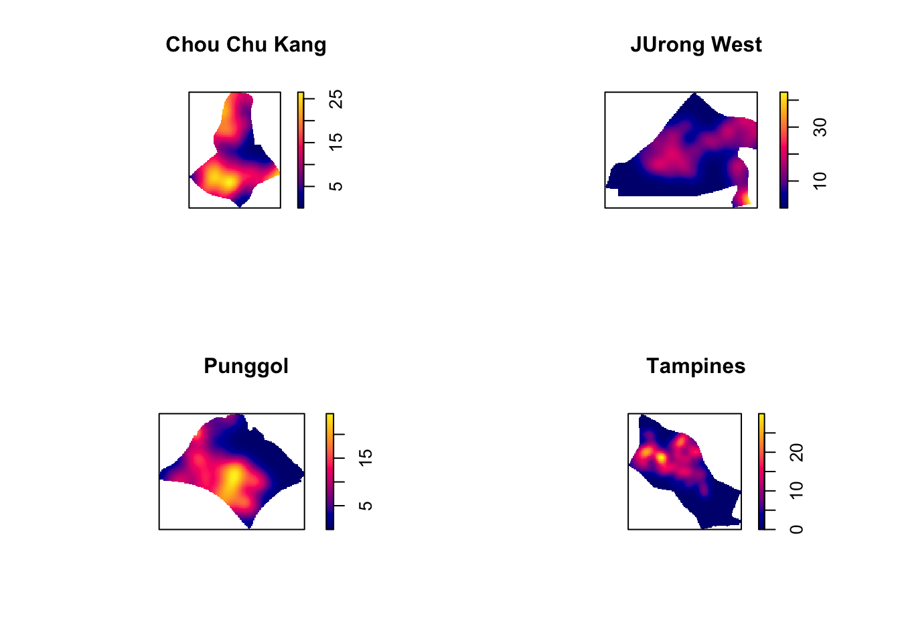

pacman::p_load(maptools, sf, raster, spatstat, tmap)1st & 2nd Order Spatial Point Patterns Analysis Methods
Hands-On Exercise
tidyverse
sf
tmap
1st & 2nd Order Spatial Point Patterns Analysis Methods.
1.0 Overview
1st & 2nd Order Spatial Point Patterns Analysis Methods
1.1 Readings
Lesson 3 Slides
Spatial point patterns use points as events.
When dealing with their locations, consider if the points are randomly located or patterned.
If these locations are associated with a value, they may follow a marked point pattern (Point patterns with a mark, which is a categorical or numerical label). They may also be random or patterned.
When considering points on a plane, these points can be imagined to occur on an isotropic (Measurement direction does not affect magnitude) plane. (Perfectly flat and homogeneous 2D space).
In a set of observed points, they generally follow 3 spatial distributions: Random, Aggregate (Clustered) and Regular (Uniform)
\(X = \{x∈D\}\) where D is the study region, or a subset of \(R^n\), where n is the dimensions of the Euclidean space, probably 2 in most cases.
First-order analysis of spatial point patterns: Observations vary based on location due to variations in underlying properties
Second order analysis of spatial point patterns: Observations vary based on location due to interaction effects between observations
2 Kinds of First order spatial point patterns analysis techniques
- Density Based
Kernel density estimation (KDE)
\(\hat{\lambda}_\tau(s)=\frac{1}{\sigma_\tau(s)} \sum_{i=1}^{n} \frac{1}{\tau^2}k(\frac{s-s_i}{\tau})\)
\(k(\frac{s-s_i}{\tau})\) Is the kernel, which can have different equations for the function k. The above is the uniform kernel.
\(\tau\) is the bandwidth, or radius
The centre is called the “regression point”
Adaptive bandwidth: Adjust bandwidth (radius) based on data density. i.e shorter for dense, longer for sparse. Can use nearest-neighbour for this
Fixed bandwidth: May produce large variances for sparse data and hide subtle local variation for sparse data. May not be able to calibrate in local areas where data is too sparse.
Quadrat analysis
Divide the study area \(R\) into equally-sized subregions. Often but not necessarily square.
Count events per subregion
Calculate intensity of events in each region. Intensity is denoted with \(\lambda\), \(n\) is the number of events. \(A\) is the area of each quadrat. \(\lambda=\frac{n}{A}\)
Perform the Complete Spatial Randomness Test (CSR)
Variance-Mean Ratio (VMR): For uniform, expect close to 0. For random, expect close to 1. For cluster, expect more than 1
CSR/IRP (independent random process): Any event has equal probability of being in any location [1st order]. Location of an event is indepent of the location of another [2nd order].
Quadrat weaknesses
Sensitive to quadrat size since the number of points will vary.
Measure of dispersion rather than pattern
Single measure for entire distribution, variation with whole region is not recognised.
- Distance-based
- Nearest neighbour index
Euclidean distance from a point to nearest neighbour. Expressed as a ratio of observed mean distance to expected mean distance.
\(NNI=\frac{\bar{d}}{E(\bar{d})}\)
\(\bar{d}=\frac{\sum_{i=1}^{n}d_i}{n}\)
\(E(\bar{d})=0.5\sqrt{\frac{A}{n}}\)
If index < 1, clustering
If index == 1, random
If index > 1, Dispersion or competition
Consider the test statistic Z: \(Z=\frac{\bar{d}-E(\bar{d})}{Std.error}\)
Reject the null hypothesis if z-score is large and p-value is smaller than alpha value (0.05)
- Nearest neighbour index
Density based measures:
Global density: The density of points in the whole region
Local density: Density of points within a subregion
G Function
\(G(r)=\frac{|r_{min}(s_i|)<r}{|R|}\)
n is the number of points in the study area
Tells us the way events are spaced in a point pattern
Clustered: G increases rapidly over short distance
Evenness: G increases slow up to the distance where most events are space before increasing rapidly
Evaluate with simulated confidence envelopes
Monte Carlo simulation test of CSR: A significance test
- Do m independent simulations of n events in the study region
- For every simulated point pattern, estimate \(G(r)\) and use 5th and 95th percentiles of the function to define upper and lower simulation envelopes.
- If the estimated \(G(r)\) falls outside these bounds, it is statistically significant
- Simply put: Spray n events m times and calculate \(G(r)\). Draw bounds based on the 0.05 and 1-0.05 percentiles and compare to assess the chance of the \(G(r)\) being a random coincidence
F Function
Select some random point locations within \(R\)
Find min distance from each point to any event in \(R\)
3 Steps
- Randomly select m points where \(m=(p_1,p_2,...,p_n)\)
- Calculate \(d_{min}(p_i,s)\)
- Calculate \(F(d)\) where \(F(d)=\frac{|d_{min}(p_i,s) < d|}{m}\)
If clustered, F(r) rises slowly at first before rising rapidly at longer distances
If evenness, F(r) rises rapidly at first then slowly at longer distances
Like G function, calculate the envelopes and check if it falls outside
K Function
Consider the limit of NN distance. It only uses nearest distance.
K function uses more points
Estimate of spatial dependence over a wider range
Uses every distance between events in \(R\)
Assumed isotropy (identical values of a property in all directions)
Calculation
Construct circle \(c\) of radius \(h\) around each point \(e_i\)
Count \(|e_j|=|{c \cap e}|\)
Repeat previous steps for every \(e_i \in e\)
Slowly increment \(h\) and repeat calculations
\(\hat{K}(h)=\frac{R}{n^2}\sum\sum_{i \ne j\frac{I_h(d_{id})}{W_{}ij}}\)
\(R\) is the area of study area. \(n\) is number of points. \(I_h(d_{id})\) is a dummy variable, 1 if \(d_{id}\le h\) else 0. \(W_{ij}\) is edge correction, the proportionate of the circumference of the circle centered on i containing point j. =1 if the whole circle is within the study area.
The K function can be used as a CSR test. Plot \(K(h)\) against different \(h\) values.
If CSR, \(K(h)=\pi h^2\)
\(K(h)\) under low if regular
\(K(h)\) over hi clustered
Consider envelope for significance, else CSR.
L Function
Normally normalised to get benchmark of 0. \(L(r)=\sqrt{\frac{K(r)}{\pi}}\)
If \(L_{obs}\) above \(L_{hi}\) and \(L_{theo}\), clustering is statistically significant
If \(L_{hi} > L_{obs} > L_{lo}\), spatial clustering/dispersion not statistically significant
If \(L_{lo} > L_{obs}\), spatial dispersion for that distance is statistically significant
\(L(r) = \sqrt{\frac{K(r)}{\pi}}-r\)
Chapter 4: Spatial distribution of points
Consider the distribution of the points in space and consider if there may be interactions between them.
The former is an easier descriptive analysis.
CSR is useful when there is no obvious regular or clustered pattern.
F function is the distance from a point to the nearest event. AKA empty space function because it measure the aveage space left between events.
G function is the distance to the nearest event; distribution of the distances from an event to its nearest other.
Homogeneous Poisson Process represents a point process where all events are independently and uniformly distributed in its region. Considered stationary and isotropic.
Stationary: Intensity is constant and second-order intensity only depends on direction and distance of 2 points.
Isotropic: Second order intensity is invariant to rotation.
- The number of events within the area is Poisson distributed with mean \(\lambda|A|\) where \(lambda\) is the constant intensity of the point process
- The \(n\) observed events in the region are uniformly distributed
Inhomogenous Poisson Process: Non-constant intensity. Described with \(lambda(x)\) that varies spatially.
Chapter 7 Spatial Point Pattern Analysis
Caution: Aggregated (Clustered) or dispersed structures can also be obtained with an IPP, where the intensity of the process varies in space.
Ripley’s K function: A cumulative function that gives the average number of points at a distance less than or equal to a radius. Standardised by the process intensity \(\frac{n}{|W|}\), assumed homogeneous.
Compare \(\hat{K}(r)\) and \(K_{}pois(r)\) - Random: = - Aggregate: > - Regular: <
L Function
Only distance-based methods can be used to detect exactly at what distance attraction or dispersion are observable without scale bias in a zone.
D Function \(D(r)=K_{cas}(r)-K_{controls}(r)\) Compare two subpopulation’s distributions
2.0 Setup
2.1 Requirements
- sf: Simple features access for R. Includes importing, managing and processing data.
- spatstat: For point to point analysis, 1st and 2nd order spatial point patterns analysis and KDE.
- raster: Handles gridding spatial data
- maptools: Convert spatial objects into spatstat’s ppp format
- tmap: Thematic map library
2.2 Data
CHILDCARE from data.gov.sg
MP14_SUBZONE_WEB_PL from data.gov.sg
CostalOutline from SLA
2.3 Importing Data and Packages
Import the data and correct the CRS of the data to 3414
childcare_sf <- st_read("data/geospatial/child-care-services-geojson.geojson") %>%
st_transform(crs=3414)Reading layer `child-care-services-geojson' from data source
`/Users/matthewho/Work/Y3S2/IS415/Website/IS415/HandsOnEx/HE3/data/geospatial/child-care-services-geojson.geojson'
using driver `GeoJSON'
Simple feature collection with 1545 features and 2 fields
Geometry type: POINT
Dimension: XYZ
Bounding box: xmin: 103.6824 ymin: 1.248403 xmax: 103.9897 ymax: 1.462134
z_range: zmin: 0 zmax: 0
Geodetic CRS: WGS 84sg_sf <- st_read(dsn = "data/geospatial", layer="CostalOutline") %>%
st_transform(crs=3414)Reading layer `CostalOutline' from data source
`/Users/matthewho/Work/Y3S2/IS415/Website/IS415/HandsOnEx/HE3/data/geospatial'
using driver `ESRI Shapefile'
Simple feature collection with 60 features and 4 fields
Geometry type: POLYGON
Dimension: XY
Bounding box: xmin: 2663.926 ymin: 16357.98 xmax: 56047.79 ymax: 50244.03
Projected CRS: SVY21mpsz_sf <- st_read(dsn = "data/geospatial",
layer = "MP14_SUBZONE_WEB_PL") %>%
st_transform(crs=3414)Reading layer `MP14_SUBZONE_WEB_PL' from data source
`/Users/matthewho/Work/Y3S2/IS415/Website/IS415/HandsOnEx/HE3/data/geospatial'
using driver `ESRI Shapefile'
Simple feature collection with 323 features and 15 fields
Geometry type: MULTIPOLYGON
Dimension: XY
Bounding box: xmin: 2667.538 ymin: 15748.72 xmax: 56396.44 ymax: 50256.33
Projected CRS: SVY212.4 Wrangling Data
Checking CRS
Confirm the data’s CRS is correct
st_crs(childcare_sf)Coordinate Reference System:
User input: EPSG:3414
wkt:
PROJCRS["SVY21 / Singapore TM",
BASEGEOGCRS["SVY21",
DATUM["SVY21",
ELLIPSOID["WGS 84",6378137,298.257223563,
LENGTHUNIT["metre",1]]],
PRIMEM["Greenwich",0,
ANGLEUNIT["degree",0.0174532925199433]],
ID["EPSG",4757]],
CONVERSION["Singapore Transverse Mercator",
METHOD["Transverse Mercator",
ID["EPSG",9807]],
PARAMETER["Latitude of natural origin",1.36666666666667,
ANGLEUNIT["degree",0.0174532925199433],
ID["EPSG",8801]],
PARAMETER["Longitude of natural origin",103.833333333333,
ANGLEUNIT["degree",0.0174532925199433],
ID["EPSG",8802]],
PARAMETER["Scale factor at natural origin",1,
SCALEUNIT["unity",1],
ID["EPSG",8805]],
PARAMETER["False easting",28001.642,
LENGTHUNIT["metre",1],
ID["EPSG",8806]],
PARAMETER["False northing",38744.572,
LENGTHUNIT["metre",1],
ID["EPSG",8807]]],
CS[Cartesian,2],
AXIS["northing (N)",north,
ORDER[1],
LENGTHUNIT["metre",1]],
AXIS["easting (E)",east,
ORDER[2],
LENGTHUNIT["metre",1]],
USAGE[
SCOPE["Cadastre, engineering survey, topographic mapping."],
AREA["Singapore - onshore and offshore."],
BBOX[1.13,103.59,1.47,104.07]],
ID["EPSG",3414]]st_crs(sg_sf)Coordinate Reference System:
User input: EPSG:3414
wkt:
PROJCRS["SVY21 / Singapore TM",
BASEGEOGCRS["SVY21",
DATUM["SVY21",
ELLIPSOID["WGS 84",6378137,298.257223563,
LENGTHUNIT["metre",1]]],
PRIMEM["Greenwich",0,
ANGLEUNIT["degree",0.0174532925199433]],
ID["EPSG",4757]],
CONVERSION["Singapore Transverse Mercator",
METHOD["Transverse Mercator",
ID["EPSG",9807]],
PARAMETER["Latitude of natural origin",1.36666666666667,
ANGLEUNIT["degree",0.0174532925199433],
ID["EPSG",8801]],
PARAMETER["Longitude of natural origin",103.833333333333,
ANGLEUNIT["degree",0.0174532925199433],
ID["EPSG",8802]],
PARAMETER["Scale factor at natural origin",1,
SCALEUNIT["unity",1],
ID["EPSG",8805]],
PARAMETER["False easting",28001.642,
LENGTHUNIT["metre",1],
ID["EPSG",8806]],
PARAMETER["False northing",38744.572,
LENGTHUNIT["metre",1],
ID["EPSG",8807]]],
CS[Cartesian,2],
AXIS["northing (N)",north,
ORDER[1],
LENGTHUNIT["metre",1]],
AXIS["easting (E)",east,
ORDER[2],
LENGTHUNIT["metre",1]],
USAGE[
SCOPE["Cadastre, engineering survey, topographic mapping."],
AREA["Singapore - onshore and offshore."],
BBOX[1.13,103.59,1.47,104.07]],
ID["EPSG",3414]]st_crs(mpsz_sf)Coordinate Reference System:
User input: EPSG:3414
wkt:
PROJCRS["SVY21 / Singapore TM",
BASEGEOGCRS["SVY21",
DATUM["SVY21",
ELLIPSOID["WGS 84",6378137,298.257223563,
LENGTHUNIT["metre",1]]],
PRIMEM["Greenwich",0,
ANGLEUNIT["degree",0.0174532925199433]],
ID["EPSG",4757]],
CONVERSION["Singapore Transverse Mercator",
METHOD["Transverse Mercator",
ID["EPSG",9807]],
PARAMETER["Latitude of natural origin",1.36666666666667,
ANGLEUNIT["degree",0.0174532925199433],
ID["EPSG",8801]],
PARAMETER["Longitude of natural origin",103.833333333333,
ANGLEUNIT["degree",0.0174532925199433],
ID["EPSG",8802]],
PARAMETER["Scale factor at natural origin",1,
SCALEUNIT["unity",1],
ID["EPSG",8805]],
PARAMETER["False easting",28001.642,
LENGTHUNIT["metre",1],
ID["EPSG",8806]],
PARAMETER["False northing",38744.572,
LENGTHUNIT["metre",1],
ID["EPSG",8807]]],
CS[Cartesian,2],
AXIS["northing (N)",north,
ORDER[1],
LENGTHUNIT["metre",1]],
AXIS["easting (E)",east,
ORDER[2],
LENGTHUNIT["metre",1]],
USAGE[
SCOPE["Cadastre, engineering survey, topographic mapping."],
AREA["Singapore - onshore and offshore."],
BBOX[1.13,103.59,1.47,104.07]],
ID["EPSG",3414]]Initial plots
Plot all 3 datasets to observe obvious spatial patterns.
tm_shape(sg_sf) +
tm_polygons() +
tm_shape(mpsz_sf) +
tm_polygons()+
tm_shape(childcare_sf)+
tm_dots()This code prepares an interactive pin map.
# tmap_mode('view')
# tm_shape(childcare_sf)+
# tm_dots()
# tmap_mode('plot')Convert to sp’s Spatial* class
Use sf’s as_Spatial method to convert them
childcare <- as_Spatial(childcare_sf)
mpsz <- as_Spatial(mpsz_sf)
sg <- as_Spatial(sg_sf)Checking the conversion
childcareclass : SpatialPointsDataFrame
features : 1545
extent : 11203.01, 45404.24, 25667.6, 49300.88 (xmin, xmax, ymin, ymax)
crs : +proj=tmerc +lat_0=1.36666666666667 +lon_0=103.833333333333 +k=1 +x_0=28001.642 +y_0=38744.572 +ellps=WGS84 +towgs84=0,0,0,0,0,0,0 +units=m +no_defs
variables : 2
names : Name, Description
min values : kml_1, <center><table><tr><th colspan='2' align='center'><em>Attributes</em></th></tr><tr bgcolor="#E3E3F3"> <th>ADDRESSBLOCKHOUSENUMBER</th> <td></td> </tr><tr bgcolor=""> <th>ADDRESSBUILDINGNAME</th> <td></td> </tr><tr bgcolor="#E3E3F3"> <th>ADDRESSPOSTALCODE</th> <td>018989</td> </tr><tr bgcolor=""> <th>ADDRESSSTREETNAME</th> <td>1, MARINA BOULEVARD, #B1 - 01, ONE MARINA BOULEVARD, SINGAPORE 018989</td> </tr><tr bgcolor="#E3E3F3"> <th>ADDRESSTYPE</th> <td></td> </tr><tr bgcolor=""> <th>DESCRIPTION</th> <td></td> </tr><tr bgcolor="#E3E3F3"> <th>HYPERLINK</th> <td></td> </tr><tr bgcolor=""> <th>LANDXADDRESSPOINT</th> <td>0</td> </tr><tr bgcolor="#E3E3F3"> <th>LANDYADDRESSPOINT</th> <td>0</td> </tr><tr bgcolor=""> <th>NAME</th> <td>THE LITTLE SKOOL-HOUSE INTERNATIONAL PTE. LTD.</td> </tr><tr bgcolor="#E3E3F3"> <th>PHOTOURL</th> <td></td> </tr><tr bgcolor=""> <th>ADDRESSFLOORNUMBER</th> <td></td> </tr><tr bgcolor="#E3E3F3"> <th>INC_CRC</th> <td>08F73931F4A691F4</td> </tr><tr bgcolor=""> <th>FMEL_UPD_D</th> <td>20200826094036</td> </tr><tr bgcolor="#E3E3F3"> <th>ADDRESSUNITNUMBER</th> <td></td> </tr></table></center>
max values : kml_999, <center><table><tr><th colspan='2' align='center'><em>Attributes</em></th></tr><tr bgcolor="#E3E3F3"> <th>ADDRESSBLOCKHOUSENUMBER</th> <td></td> </tr><tr bgcolor=""> <th>ADDRESSBUILDINGNAME</th> <td></td> </tr><tr bgcolor="#E3E3F3"> <th>ADDRESSPOSTALCODE</th> <td>829646</td> </tr><tr bgcolor=""> <th>ADDRESSSTREETNAME</th> <td>200, PONGGOL SEVENTEENTH AVENUE, SINGAPORE 829646</td> </tr><tr bgcolor="#E3E3F3"> <th>ADDRESSTYPE</th> <td></td> </tr><tr bgcolor=""> <th>DESCRIPTION</th> <td>Child Care Services</td> </tr><tr bgcolor="#E3E3F3"> <th>HYPERLINK</th> <td></td> </tr><tr bgcolor=""> <th>LANDXADDRESSPOINT</th> <td>0</td> </tr><tr bgcolor="#E3E3F3"> <th>LANDYADDRESSPOINT</th> <td>0</td> </tr><tr bgcolor=""> <th>NAME</th> <td>RAFFLES KIDZ @ PUNGGOL PTE LTD</td> </tr><tr bgcolor="#E3E3F3"> <th>PHOTOURL</th> <td></td> </tr><tr bgcolor=""> <th>ADDRESSFLOORNUMBER</th> <td></td> </tr><tr bgcolor="#E3E3F3"> <th>INC_CRC</th> <td>379D017BF244B0FA</td> </tr><tr bgcolor=""> <th>FMEL_UPD_D</th> <td>20200826094036</td> </tr><tr bgcolor="#E3E3F3"> <th>ADDRESSUNITNUMBER</th> <td></td> </tr></table></center> mpszclass : SpatialPolygonsDataFrame
features : 323
extent : 2667.538, 56396.44, 15748.72, 50256.33 (xmin, xmax, ymin, ymax)
crs : +proj=tmerc +lat_0=1.36666666666667 +lon_0=103.833333333333 +k=1 +x_0=28001.642 +y_0=38744.572 +ellps=WGS84 +towgs84=0,0,0,0,0,0,0 +units=m +no_defs
variables : 15
names : OBJECTID, SUBZONE_NO, SUBZONE_N, SUBZONE_C, CA_IND, PLN_AREA_N, PLN_AREA_C, REGION_N, REGION_C, INC_CRC, FMEL_UPD_D, X_ADDR, Y_ADDR, SHAPE_Leng, SHAPE_Area
min values : 1, 1, ADMIRALTY, AMSZ01, N, ANG MO KIO, AM, CENTRAL REGION, CR, 00F5E30B5C9B7AD8, 16409, 5092.8949, 19579.069, 871.554887798, 39437.9352703
max values : 323, 17, YUNNAN, YSSZ09, Y, YISHUN, YS, WEST REGION, WR, FFCCF172717C2EAF, 16409, 50424.7923, 49552.7904, 68083.9364708, 69748298.792 sgclass : SpatialPolygonsDataFrame
features : 60
extent : 2663.926, 56047.79, 16357.98, 50244.03 (xmin, xmax, ymin, ymax)
crs : +proj=tmerc +lat_0=1.36666666666667 +lon_0=103.833333333333 +k=1 +x_0=28001.642 +y_0=38744.572 +ellps=WGS84 +towgs84=0,0,0,0,0,0,0 +units=m +no_defs
variables : 4
names : GDO_GID, MSLINK, MAPID, COSTAL_NAM
min values : 1, 1, 0, ISLAND LINK
max values : 60, 67, 0, SINGAPORE - MAIN ISLAND Convert Spatial* into generic sp format
We cannot convert directly to ppp, so we convert to generic spatial first
childcare_sp <- as(childcare, "SpatialPoints")
sg_sp <- as(sg, "SpatialPolygons")
childcareclass : SpatialPointsDataFrame
features : 1545
extent : 11203.01, 45404.24, 25667.6, 49300.88 (xmin, xmax, ymin, ymax)
crs : +proj=tmerc +lat_0=1.36666666666667 +lon_0=103.833333333333 +k=1 +x_0=28001.642 +y_0=38744.572 +ellps=WGS84 +towgs84=0,0,0,0,0,0,0 +units=m +no_defs
variables : 2
names : Name, Description
min values : kml_1, <center><table><tr><th colspan='2' align='center'><em>Attributes</em></th></tr><tr bgcolor="#E3E3F3"> <th>ADDRESSBLOCKHOUSENUMBER</th> <td></td> </tr><tr bgcolor=""> <th>ADDRESSBUILDINGNAME</th> <td></td> </tr><tr bgcolor="#E3E3F3"> <th>ADDRESSPOSTALCODE</th> <td>018989</td> </tr><tr bgcolor=""> <th>ADDRESSSTREETNAME</th> <td>1, MARINA BOULEVARD, #B1 - 01, ONE MARINA BOULEVARD, SINGAPORE 018989</td> </tr><tr bgcolor="#E3E3F3"> <th>ADDRESSTYPE</th> <td></td> </tr><tr bgcolor=""> <th>DESCRIPTION</th> <td></td> </tr><tr bgcolor="#E3E3F3"> <th>HYPERLINK</th> <td></td> </tr><tr bgcolor=""> <th>LANDXADDRESSPOINT</th> <td>0</td> </tr><tr bgcolor="#E3E3F3"> <th>LANDYADDRESSPOINT</th> <td>0</td> </tr><tr bgcolor=""> <th>NAME</th> <td>THE LITTLE SKOOL-HOUSE INTERNATIONAL PTE. LTD.</td> </tr><tr bgcolor="#E3E3F3"> <th>PHOTOURL</th> <td></td> </tr><tr bgcolor=""> <th>ADDRESSFLOORNUMBER</th> <td></td> </tr><tr bgcolor="#E3E3F3"> <th>INC_CRC</th> <td>08F73931F4A691F4</td> </tr><tr bgcolor=""> <th>FMEL_UPD_D</th> <td>20200826094036</td> </tr><tr bgcolor="#E3E3F3"> <th>ADDRESSUNITNUMBER</th> <td></td> </tr></table></center>
max values : kml_999, <center><table><tr><th colspan='2' align='center'><em>Attributes</em></th></tr><tr bgcolor="#E3E3F3"> <th>ADDRESSBLOCKHOUSENUMBER</th> <td></td> </tr><tr bgcolor=""> <th>ADDRESSBUILDINGNAME</th> <td></td> </tr><tr bgcolor="#E3E3F3"> <th>ADDRESSPOSTALCODE</th> <td>829646</td> </tr><tr bgcolor=""> <th>ADDRESSSTREETNAME</th> <td>200, PONGGOL SEVENTEENTH AVENUE, SINGAPORE 829646</td> </tr><tr bgcolor="#E3E3F3"> <th>ADDRESSTYPE</th> <td></td> </tr><tr bgcolor=""> <th>DESCRIPTION</th> <td>Child Care Services</td> </tr><tr bgcolor="#E3E3F3"> <th>HYPERLINK</th> <td></td> </tr><tr bgcolor=""> <th>LANDXADDRESSPOINT</th> <td>0</td> </tr><tr bgcolor="#E3E3F3"> <th>LANDYADDRESSPOINT</th> <td>0</td> </tr><tr bgcolor=""> <th>NAME</th> <td>RAFFLES KIDZ @ PUNGGOL PTE LTD</td> </tr><tr bgcolor="#E3E3F3"> <th>PHOTOURL</th> <td></td> </tr><tr bgcolor=""> <th>ADDRESSFLOORNUMBER</th> <td></td> </tr><tr bgcolor="#E3E3F3"> <th>INC_CRC</th> <td>379D017BF244B0FA</td> </tr><tr bgcolor=""> <th>FMEL_UPD_D</th> <td>20200826094036</td> </tr><tr bgcolor="#E3E3F3"> <th>ADDRESSUNITNUMBER</th> <td></td> </tr></table></center> mpszclass : SpatialPolygonsDataFrame
features : 323
extent : 2667.538, 56396.44, 15748.72, 50256.33 (xmin, xmax, ymin, ymax)
crs : +proj=tmerc +lat_0=1.36666666666667 +lon_0=103.833333333333 +k=1 +x_0=28001.642 +y_0=38744.572 +ellps=WGS84 +towgs84=0,0,0,0,0,0,0 +units=m +no_defs
variables : 15
names : OBJECTID, SUBZONE_NO, SUBZONE_N, SUBZONE_C, CA_IND, PLN_AREA_N, PLN_AREA_C, REGION_N, REGION_C, INC_CRC, FMEL_UPD_D, X_ADDR, Y_ADDR, SHAPE_Leng, SHAPE_Area
min values : 1, 1, ADMIRALTY, AMSZ01, N, ANG MO KIO, AM, CENTRAL REGION, CR, 00F5E30B5C9B7AD8, 16409, 5092.8949, 19579.069, 871.554887798, 39437.9352703
max values : 323, 17, YUNNAN, YSSZ09, Y, YISHUN, YS, WEST REGION, WR, FFCCF172717C2EAF, 16409, 50424.7923, 49552.7904, 68083.9364708, 69748298.792 sgclass : SpatialPolygonsDataFrame
features : 60
extent : 2663.926, 56047.79, 16357.98, 50244.03 (xmin, xmax, ymin, ymax)
crs : +proj=tmerc +lat_0=1.36666666666667 +lon_0=103.833333333333 +k=1 +x_0=28001.642 +y_0=38744.572 +ellps=WGS84 +towgs84=0,0,0,0,0,0,0 +units=m +no_defs
variables : 4
names : GDO_GID, MSLINK, MAPID, COSTAL_NAM
min values : 1, 1, 0, ISLAND LINK
max values : 60, 67, 0, SINGAPORE - MAIN ISLAND Convert generic sp to spatstat’s ppp format
childcare_ppp <- as(childcare_sp, "ppp")
childcare_pppPlanar point pattern: 1545 points
window: rectangle = [11203.01, 45404.24] x [25667.6, 49300.88] unitsplot(childcare_ppp)
While plotting the new ppp object, we get a warning that it contains duplicated points
plot(childcare_ppp)
We confirm with with any(duplicated())
any(duplicated(childcare_ppp))[1] TRUEmultiplicity() shows us which points are duplicated
multiplicity(childcare_ppp) 1 2 3 4 5 6 7 8 9 10 11 12 13 14 15 16
1 1 1 3 1 1 1 1 2 1 1 1 1 1 1 1
17 18 19 20 21 22 23 24 25 26 27 28 29 30 31 32
1 1 1 1 1 1 1 1 1 1 9 1 1 1 1 1
33 34 35 36 37 38 39 40 41 42 43 44 45 46 47 48
1 1 1 1 1 1 1 1 1 1 1 1 1 1 1 1
49 50 51 52 53 54 55 56 57 58 59 60 61 62 63 64
1 1 1 1 1 1 2 1 1 3 1 1 1 1 1 1
65 66 67 68 69 70 71 72 73 74 75 76 77 78 79 80
1 1 1 1 1 2 1 1 1 1 1 2 1 1 1 1
81 82 83 84 85 86 87 88 89 90 91 92 93 94 95 96
1 1 1 3 1 1 1 1 1 1 1 1 1 1 1 1
97 98 99 100 101 102 103 104 105 106 107 108 109 110 111 112
1 1 1 1 1 1 1 1 2 1 1 1 1 1 1 1
113 114 115 116 117 118 119 120 121 122 123 124 125 126 127 128
1 1 1 1 1 1 2 1 1 1 3 1 1 1 2 1
129 130 131 132 133 134 135 136 137 138 139 140 141 142 143 144
1 1 1 1 1 2 1 1 1 1 1 1 1 1 3 2
145 146 147 148 149 150 151 152 153 154 155 156 157 158 159 160
1 2 1 1 1 2 2 3 1 5 1 5 1 1 1 2
161 162 163 164 165 166 167 168 169 170 171 172 173 174 175 176
1 1 1 1 2 1 1 1 1 1 1 2 1 1 1 1
177 178 179 180 181 182 183 184 185 186 187 188 189 190 191 192
1 4 1 1 1 1 1 1 1 1 1 1 1 1 1 1
193 194 195 196 197 198 199 200 201 202 203 204 205 206 207 208
1 1 1 1 1 2 2 1 1 1 1 2 1 4 1 1
209 210 211 212 213 214 215 216 217 218 219 220 221 222 223 224
2 1 1 1 1 1 1 1 1 1 1 1 2 1 1 1
225 226 227 228 229 230 231 232 233 234 235 236 237 238 239 240
1 1 1 1 1 1 1 1 1 1 1 1 1 1 1 1
241 242 243 244 245 246 247 248 249 250 251 252 253 254 255 256
1 1 1 1 2 1 1 1 1 1 1 1 1 1 1 1
257 258 259 260 261 262 263 264 265 266 267 268 269 270 271 272
1 1 1 1 1 1 1 1 1 1 2 1 1 1 1 3
273 274 275 276 277 278 279 280 281 282 283 284 285 286 287 288
1 1 1 1 1 1 3 1 1 1 1 1 1 1 1 1
289 290 291 292 293 294 295 296 297 298 299 300 301 302 303 304
1 1 1 1 1 1 1 9 1 1 2 1 1 1 1 1
305 306 307 308 309 310 311 312 313 314 315 316 317 318 319 320
1 1 1 1 1 1 1 1 1 1 1 1 1 1 1 1
321 322 323 324 325 326 327 328 329 330 331 332 333 334 335 336
1 1 1 5 1 1 1 1 1 2 1 1 2 2 1 1
337 338 339 340 341 342 343 344 345 346 347 348 349 350 351 352
1 1 1 1 1 1 1 1 1 1 1 1 1 2 2 1
353 354 355 356 357 358 359 360 361 362 363 364 365 366 367 368
1 1 1 1 9 1 1 1 1 1 1 1 1 1 1 1
369 370 371 372 373 374 375 376 377 378 379 380 381 382 383 384
1 3 1 1 1 1 1 1 1 1 1 1 1 1 1 1
385 386 387 388 389 390 391 392 393 394 395 396 397 398 399 400
1 1 1 1 1 1 1 1 1 1 1 1 1 1 1 1
401 402 403 404 405 406 407 408 409 410 411 412 413 414 415 416
1 1 2 1 1 1 1 1 1 1 2 1 1 1 1 1
417 418 419 420 421 422 423 424 425 426 427 428 429 430 431 432
1 1 1 1 1 1 1 2 1 1 2 1 1 1 1 1
433 434 435 436 437 438 439 440 441 442 443 444 445 446 447 448
1 1 1 1 2 1 1 1 1 1 1 1 1 1 1 1
449 450 451 452 453 454 455 456 457 458 459 460 461 462 463 464
1 1 9 9 1 1 1 1 1 1 1 1 1 1 2 1
465 466 467 468 469 470 471 472 473 474 475 476 477 478 479 480
2 1 1 1 1 1 1 1 1 1 1 1 2 2 1 1
481 482 483 484 485 486 487 488 489 490 491 492 493 494 495 496
1 1 1 1 1 1 1 1 1 1 1 1 1 1 1 1
497 498 499 500 501 502 503 504 505 506 507 508 509 510 511 512
1 1 1 1 1 1 2 1 1 1 1 1 1 1 1 2
513 514 515 516 517 518 519 520 521 522 523 524 525 526 527 528
1 1 1 1 1 1 1 1 1 1 1 2 1 1 3 1
529 530 531 532 533 534 535 536 537 538 539 540 541 542 543 544
1 1 1 1 1 1 1 1 1 1 1 1 1 1 1 1
545 546 547 548 549 550 551 552 553 554 555 556 557 558 559 560
1 1 1 1 1 1 1 1 1 3 1 1 1 1 1 1
561 562 563 564 565 566 567 568 569 570 571 572 573 574 575 576
2 2 2 1 1 1 1 2 1 1 2 1 1 1 2 1
577 578 579 580 581 582 583 584 585 586 587 588 589 590 591 592
1 2 1 1 1 1 1 9 1 4 1 2 1 1 1 1
593 594 595 596 597 598 599 600 601 602 603 604 605 606 607 608
2 1 1 1 1 1 1 1 2 1 2 1 1 1 1 1
609 610 611 612 613 614 615 616 617 618 619 620 621 622 623 624
1 1 1 1 1 1 1 1 1 2 1 2 1 1 1 1
625 626 627 628 629 630 631 632 633 634 635 636 637 638 639 640
1 1 1 1 1 1 1 1 1 1 1 1 1 1 1 1
641 642 643 644 645 646 647 648 649 650 651 652 653 654 655 656
1 1 1 1 1 1 1 1 1 1 1 1 1 1 1 4
657 658 659 660 661 662 663 664 665 666 667 668 669 670 671 672
1 1 1 1 1 1 1 3 1 1 1 1 1 1 1 1
673 674 675 676 677 678 679 680 681 682 683 684 685 686 687 688
1 1 1 1 1 4 1 1 1 1 1 4 1 1 1 1
689 690 691 692 693 694 695 696 697 698 699 700 701 702 703 704
1 1 1 1 1 1 1 1 1 1 1 1 1 1 1 1
705 706 707 708 709 710 711 712 713 714 715 716 717 718 719 720
1 1 2 1 1 1 1 1 1 1 1 1 1 1 1 1
721 722 723 724 725 726 727 728 729 730 731 732 733 734 735 736
1 1 1 1 1 1 1 1 1 1 1 1 1 1 1 1
737 738 739 740 741 742 743 744 745 746 747 748 749 750 751 752
1 2 1 1 1 1 1 1 1 1 1 1 1 1 1 1
753 754 755 756 757 758 759 760 761 762 763 764 765 766 767 768
1 1 1 1 1 2 1 1 1 1 1 1 1 1 1 1
769 770 771 772 773 774 775 776 777 778 779 780 781 782 783 784
1 1 1 1 1 1 1 1 1 4 1 1 1 1 1 1
785 786 787 788 789 790 791 792 793 794 795 796 797 798 799 800
1 1 1 1 1 1 1 1 1 1 1 1 1 1 1 1
801 802 803 804 805 806 807 808 809 810 811 812 813 814 815 816
1 1 1 1 1 1 1 1 1 1 1 1 1 1 1 1
817 818 819 820 821 822 823 824 825 826 827 828 829 830 831 832
1 1 1 1 1 1 1 1 1 1 1 1 1 1 1 1
833 834 835 836 837 838 839 840 841 842 843 844 845 846 847 848
1 1 1 1 1 1 1 2 1 1 1 1 1 1 1 1
849 850 851 852 853 854 855 856 857 858 859 860 861 862 863 864
1 1 1 1 1 1 1 1 1 1 1 1 1 1 1 1
865 866 867 868 869 870 871 872 873 874 875 876 877 878 879 880
1 1 1 1 1 1 1 1 1 1 1 1 1 1 1 2
881 882 883 884 885 886 887 888 889 890 891 892 893 894 895 896
3 1 1 1 2 1 1 1 3 1 1 3 1 1 1 1
897 898 899 900 901 902 903 904 905 906 907 908 909 910 911 912
1 1 1 1 1 1 1 1 1 1 1 1 1 1 1 1
913 914 915 916 917 918 919 920 921 922 923 924 925 926 927 928
1 1 1 1 1 1 1 1 1 1 1 1 1 1 1 1
929 930 931 932 933 934 935 936 937 938 939 940 941 942 943 944
1 1 1 1 1 1 1 1 1 1 1 1 1 1 1 1
945 946 947 948 949 950 951 952 953 954 955 956 957 958 959 960
1 1 1 1 1 1 1 1 1 1 1 1 1 1 1 2
961 962 963 964 965 966 967 968 969 970 971 972 973 974 975 976
1 1 1 1 1 1 1 1 1 1 1 1 1 1 1 1
977 978 979 980 981 982 983 984 985 986 987 988 989 990 991 992
1 1 1 1 1 1 1 1 1 1 1 1 1 1 1 1
993 994 995 996 997 998 999 1000 1001 1002 1003 1004 1005 1006 1007 1008
1 1 1 1 1 1 1 1 1 1 1 1 1 1 1 1
1009 1010 1011 1012 1013 1014 1015 1016 1017 1018 1019 1020 1021 1022 1023 1024
1 1 1 1 1 1 1 1 1 1 1 1 1 1 1 1
1025 1026 1027 1028 1029 1030 1031 1032 1033 1034 1035 1036 1037 1038 1039 1040
1 1 1 1 1 1 1 1 1 1 1 1 1 1 1 1
1041 1042 1043 1044 1045 1046 1047 1048 1049 1050 1051 1052 1053 1054 1055 1056
1 1 1 1 1 1 1 1 1 2 2 1 1 1 1 1
1057 1058 1059 1060 1061 1062 1063 1064 1065 1066 1067 1068 1069 1070 1071 1072
1 1 1 1 1 1 1 1 1 1 1 1 1 1 1 1
1073 1074 1075 1076 1077 1078 1079 1080 1081 1082 1083 1084 1085 1086 1087 1088
1 1 1 1 1 1 1 1 1 1 1 1 1 1 1 1
1089 1090 1091 1092 1093 1094 1095 1096 1097 1098 1099 1100 1101 1102 1103 1104
1 1 1 1 1 1 1 1 1 1 1 1 1 1 1 1
1105 1106 1107 1108 1109 1110 1111 1112 1113 1114 1115 1116 1117 1118 1119 1120
1 1 1 1 1 2 1 1 1 1 1 1 1 1 1 1
1121 1122 1123 1124 1125 1126 1127 1128 1129 1130 1131 1132 1133 1134 1135 1136
1 1 1 1 1 1 1 1 2 2 1 1 1 5 1 1
1137 1138 1139 1140 1141 1142 1143 1144 1145 1146 1147 1148 1149 1150 1151 1152
1 1 1 1 1 1 1 1 1 2 1 1 1 1 1 1
1153 1154 1155 1156 1157 1158 1159 1160 1161 1162 1163 1164 1165 1166 1167 1168
1 1 1 1 1 1 1 1 1 1 2 1 1 1 1 1
1169 1170 1171 1172 1173 1174 1175 1176 1177 1178 1179 1180 1181 1182 1183 1184
1 9 1 2 2 1 1 1 2 1 1 1 1 1 1 1
1185 1186 1187 1188 1189 1190 1191 1192 1193 1194 1195 1196 1197 1198 1199 1200
1 1 1 1 2 1 1 1 3 1 1 1 1 1 1 1
1201 1202 1203 1204 1205 1206 1207 1208 1209 1210 1211 1212 1213 1214 1215 1216
9 1 1 1 1 1 1 1 1 1 1 1 1 1 1 1
1217 1218 1219 1220 1221 1222 1223 1224 1225 1226 1227 1228 1229 1230 1231 1232
1 1 1 2 1 1 1 1 1 1 1 1 1 1 1 1
1233 1234 1235 1236 1237 1238 1239 1240 1241 1242 1243 1244 1245 1246 1247 1248
1 1 1 1 1 1 1 1 1 1 1 1 1 1 1 1
1249 1250 1251 1252 1253 1254 1255 1256 1257 1258 1259 1260 1261 1262 1263 1264
1 1 1 1 1 1 1 1 1 1 1 1 1 1 1 1
1265 1266 1267 1268 1269 1270 1271 1272 1273 1274 1275 1276 1277 1278 1279 1280
1 1 1 1 1 1 1 1 1 1 1 1 1 1 1 1
1281 1282 1283 1284 1285 1286 1287 1288 1289 1290 1291 1292 1293 1294 1295 1296
1 1 1 1 1 1 1 1 1 1 1 1 1 1 1 2
1297 1298 1299 1300 1301 1302 1303 1304 1305 1306 1307 1308 1309 1310 1311 1312
1 1 1 2 1 2 1 1 1 2 2 2 1 1 1 1
1313 1314 1315 1316 1317 1318 1319 1320 1321 1322 1323 1324 1325 1326 1327 1328
1 1 2 1 1 1 1 1 1 1 1 1 2 1 1 1
1329 1330 1331 1332 1333 1334 1335 1336 1337 1338 1339 1340 1341 1342 1343 1344
1 1 1 1 3 1 1 1 1 1 1 1 1 1 1 1
1345 1346 1347 1348 1349 1350 1351 1352 1353 1354 1355 1356 1357 1358 1359 1360
1 1 1 1 1 1 1 1 4 1 1 1 1 1 2 1
1361 1362 1363 1364 1365 1366 1367 1368 1369 1370 1371 1372 1373 1374 1375 1376
1 1 1 1 1 1 1 1 1 1 1 1 1 1 1 1
1377 1378 1379 1380 1381 1382 1383 1384 1385 1386 1387 1388 1389 1390 1391 1392
1 1 1 1 1 1 1 1 1 9 1 1 1 1 1 1
1393 1394 1395 1396 1397 1398 1399 1400 1401 1402 1403 1404 1405 1406 1407 1408
1 1 1 1 1 1 1 1 1 1 1 1 1 1 1 1
1409 1410 1411 1412 1413 1414 1415 1416 1417 1418 1419 1420 1421 1422 1423 1424
1 1 1 1 1 1 1 1 1 1 1 1 1 1 1 1
1425 1426 1427 1428 1429 1430 1431 1432 1433 1434 1435 1436 1437 1438 1439 1440
1 1 1 1 1 1 1 1 1 1 1 1 1 1 2 1
1441 1442 1443 1444 1445 1446 1447 1448 1449 1450 1451 1452 1453 1454 1455 1456
1 2 1 1 1 1 1 1 1 1 1 1 1 1 1 1
1457 1458 1459 1460 1461 1462 1463 1464 1465 1466 1467 1468 1469 1470 1471 1472
1 1 1 1 1 1 1 1 1 1 2 1 1 1 1 1
1473 1474 1475 1476 1477 1478 1479 1480 1481 1482 1483 1484 1485 1486 1487 1488
1 1 1 1 1 1 2 1 1 1 1 1 1 1 1 1
1489 1490 1491 1492 1493 1494 1495 1496 1497 1498 1499 1500 1501 1502 1503 1504
1 1 1 1 1 1 1 1 1 1 5 1 1 1 1 1
1505 1506 1507 1508 1509 1510 1511 1512 1513 1514 1515 1516 1517 1518 1519 1520
1 1 1 1 1 1 1 1 1 1 1 1 1 1 1 1
1521 1522 1523 1524 1525 1526 1527 1528 1529 1530 1531 1532 1533 1534 1535 1536
1 1 1 1 1 2 1 1 1 1 2 1 1 1 1 3
1537 1538 1539 1540 1541 1542 1543 1544 1545
1 1 1 1 1 1 2 1 1 sum() the number of duplicated points
sum(multiplicity(childcare_ppp) > 1)[1] 128In the interactive map, darker spots have duplicated data
# tmap_mode('view')
# tm_shape(childcare) +
# tm_dots(alpha=0.4,
# size=0.05)
# tmap_mode('plot')Jittering
Jittering: Slightly shift duplicate points such that they no longer occur at the same point to make them unique. After that, confirm that there are no longer any duplicates with any(duplicated())
childcare_ppp_jit <- rjitter(childcare_ppp,
retry=TRUE,
nsim=1,
drop=TRUE)
any(duplicated(childcare_ppp_jit))[1] FALSEowin
owin: A geographical boundary to confine our analysis.
sg_owin <- as(sg_sp, "owin")
plot(sg_owin)
summary(sg_owin)Window: polygonal boundary
60 separate polygons (no holes)
vertices area relative.area
polygon 1 38 1.56140e+04 2.09e-05
polygon 2 735 4.69093e+06 6.27e-03
polygon 3 49 1.66986e+04 2.23e-05
polygon 4 76 3.12332e+05 4.17e-04
polygon 5 5141 6.36179e+08 8.50e-01
polygon 6 42 5.58317e+04 7.46e-05
polygon 7 67 1.31354e+06 1.75e-03
polygon 8 15 4.46420e+03 5.96e-06
polygon 9 14 5.46674e+03 7.30e-06
polygon 10 37 5.26194e+03 7.03e-06
polygon 11 53 3.44003e+04 4.59e-05
polygon 12 74 5.82234e+04 7.78e-05
polygon 13 69 5.63134e+04 7.52e-05
polygon 14 143 1.45139e+05 1.94e-04
polygon 15 165 3.38736e+05 4.52e-04
polygon 16 130 9.40465e+04 1.26e-04
polygon 17 19 1.80977e+03 2.42e-06
polygon 18 16 2.01046e+03 2.69e-06
polygon 19 93 4.30642e+05 5.75e-04
polygon 20 90 4.15092e+05 5.54e-04
polygon 21 721 1.92795e+06 2.57e-03
polygon 22 330 1.11896e+06 1.49e-03
polygon 23 115 9.28394e+05 1.24e-03
polygon 24 37 1.01705e+04 1.36e-05
polygon 25 25 1.66227e+04 2.22e-05
polygon 26 10 2.14507e+03 2.86e-06
polygon 27 190 2.02489e+05 2.70e-04
polygon 28 175 9.25904e+05 1.24e-03
polygon 29 1993 9.99217e+06 1.33e-02
polygon 30 38 2.42492e+04 3.24e-05
polygon 31 24 6.35239e+03 8.48e-06
polygon 32 53 6.35791e+05 8.49e-04
polygon 33 41 1.60161e+04 2.14e-05
polygon 34 22 2.54368e+03 3.40e-06
polygon 35 30 1.08382e+04 1.45e-05
polygon 36 327 2.16921e+06 2.90e-03
polygon 37 111 6.62927e+05 8.85e-04
polygon 38 90 1.15991e+05 1.55e-04
polygon 39 98 6.26829e+04 8.37e-05
polygon 40 415 3.25384e+06 4.35e-03
polygon 41 222 1.51142e+06 2.02e-03
polygon 42 107 6.33039e+05 8.45e-04
polygon 43 7 2.48299e+03 3.32e-06
polygon 44 17 3.28303e+04 4.38e-05
polygon 45 26 8.34758e+03 1.11e-05
polygon 46 177 4.67446e+05 6.24e-04
polygon 47 16 3.19460e+03 4.27e-06
polygon 48 15 4.87296e+03 6.51e-06
polygon 49 66 1.61841e+04 2.16e-05
polygon 50 149 5.63430e+06 7.53e-03
polygon 51 609 2.62570e+07 3.51e-02
polygon 52 8 7.82256e+03 1.04e-05
polygon 53 976 2.33447e+07 3.12e-02
polygon 54 55 8.25379e+04 1.10e-04
polygon 55 976 2.33447e+07 3.12e-02
polygon 56 61 3.33449e+05 4.45e-04
polygon 57 6 1.68410e+04 2.25e-05
polygon 58 4 9.45963e+03 1.26e-05
polygon 59 46 6.99702e+05 9.35e-04
polygon 60 13 7.00873e+04 9.36e-05
enclosing rectangle: [2663.93, 56047.79] x [16357.98, 50244.03] units
(53380 x 33890 units)
Window area = 748741000 square units
Fraction of frame area: 0.414Extracting events to our boundary (owin)
Looks a bit like python, will be very useful in the future. Couples the polygon with the events within it into one entity.
childcareSG_ppp = childcare_ppp[sg_owin]
summary(childcareSG_ppp)Planar point pattern: 1545 points
Average intensity 2.063463e-06 points per square unit
*Pattern contains duplicated points*
Coordinates are given to 3 decimal places
i.e. rounded to the nearest multiple of 0.001 units
Window: polygonal boundary
60 separate polygons (no holes)
vertices area relative.area
polygon 1 38 1.56140e+04 2.09e-05
polygon 2 735 4.69093e+06 6.27e-03
polygon 3 49 1.66986e+04 2.23e-05
polygon 4 76 3.12332e+05 4.17e-04
polygon 5 5141 6.36179e+08 8.50e-01
polygon 6 42 5.58317e+04 7.46e-05
polygon 7 67 1.31354e+06 1.75e-03
polygon 8 15 4.46420e+03 5.96e-06
polygon 9 14 5.46674e+03 7.30e-06
polygon 10 37 5.26194e+03 7.03e-06
polygon 11 53 3.44003e+04 4.59e-05
polygon 12 74 5.82234e+04 7.78e-05
polygon 13 69 5.63134e+04 7.52e-05
polygon 14 143 1.45139e+05 1.94e-04
polygon 15 165 3.38736e+05 4.52e-04
polygon 16 130 9.40465e+04 1.26e-04
polygon 17 19 1.80977e+03 2.42e-06
polygon 18 16 2.01046e+03 2.69e-06
polygon 19 93 4.30642e+05 5.75e-04
polygon 20 90 4.15092e+05 5.54e-04
polygon 21 721 1.92795e+06 2.57e-03
polygon 22 330 1.11896e+06 1.49e-03
polygon 23 115 9.28394e+05 1.24e-03
polygon 24 37 1.01705e+04 1.36e-05
polygon 25 25 1.66227e+04 2.22e-05
polygon 26 10 2.14507e+03 2.86e-06
polygon 27 190 2.02489e+05 2.70e-04
polygon 28 175 9.25904e+05 1.24e-03
polygon 29 1993 9.99217e+06 1.33e-02
polygon 30 38 2.42492e+04 3.24e-05
polygon 31 24 6.35239e+03 8.48e-06
polygon 32 53 6.35791e+05 8.49e-04
polygon 33 41 1.60161e+04 2.14e-05
polygon 34 22 2.54368e+03 3.40e-06
polygon 35 30 1.08382e+04 1.45e-05
polygon 36 327 2.16921e+06 2.90e-03
polygon 37 111 6.62927e+05 8.85e-04
polygon 38 90 1.15991e+05 1.55e-04
polygon 39 98 6.26829e+04 8.37e-05
polygon 40 415 3.25384e+06 4.35e-03
polygon 41 222 1.51142e+06 2.02e-03
polygon 42 107 6.33039e+05 8.45e-04
polygon 43 7 2.48299e+03 3.32e-06
polygon 44 17 3.28303e+04 4.38e-05
polygon 45 26 8.34758e+03 1.11e-05
polygon 46 177 4.67446e+05 6.24e-04
polygon 47 16 3.19460e+03 4.27e-06
polygon 48 15 4.87296e+03 6.51e-06
polygon 49 66 1.61841e+04 2.16e-05
polygon 50 149 5.63430e+06 7.53e-03
polygon 51 609 2.62570e+07 3.51e-02
polygon 52 8 7.82256e+03 1.04e-05
polygon 53 976 2.33447e+07 3.12e-02
polygon 54 55 8.25379e+04 1.10e-04
polygon 55 976 2.33447e+07 3.12e-02
polygon 56 61 3.33449e+05 4.45e-04
polygon 57 6 1.68410e+04 2.25e-05
polygon 58 4 9.45963e+03 1.26e-05
polygon 59 46 6.99702e+05 9.35e-04
polygon 60 13 7.00873e+04 9.36e-05
enclosing rectangle: [2663.93, 56047.79] x [16357.98, 50244.03] units
(53380 x 33890 units)
Window area = 748741000 square units
Fraction of frame area: 0.414Ploting events within the boundary
Plot the new ppp object
plot(childcareSG_ppp)3.0 First-order Spatial Point Patterns Analysis
3.1 Kernel Density Estimation (KDE)
Automatic bandwidth selection
In this case, the method is diggle. The smothing kernel is gaussian and we enable edge bias correction.
kde_childcareSG.bw <- density(childcareSG_ppp,
sigma=bw.diggle,
edge=TRUE,
kernel="gaussian")
plot(kde_childcareSG.bw)In the previous plot, the density values of the output range are unacceptably low and difficult to interpret.
Check the selected bandwidth
bw <- bw.diggle(childcareSG_ppp)
bw sigma
298.4095 Rescaling KDE values
Rescale with a conversion factor of 1000, calling it ‘KM’. The name is optional.
childcareSG_ppp.km <- rescale(childcareSG_ppp, 1000, "km")
kde_childcareSG.bw <- density(childcareSG_ppp.km,
sigma=bw.diggle,
edge=TRUE,
kernel="gaussian")
plot(kde_childcareSG.bw)We fixed the density values of the output!
3.2 Different bandwidth selection methods
Four Spatstat bandwidth calculation functions
bw.CvL(childcareSG_ppp.km) sigma
4.543278 bw.scott(childcareSG_ppp.km) sigma.x sigma.y
2.224898 1.450966 bw.ppl(childcareSG_ppp.km) sigma
0.3897114 bw.diggle(childcareSG_ppp.km) sigma
0.2984095 Comparing diggle and ppl
par(mfrow=c(1,2)) Will be useful in the future for comparing multiple representations
kde_childcareSG.ppl <- density(childcareSG_ppp.km,
sigma=bw.ppl,
edge=TRUE,
kernel="gaussian")
par(mfrow=c(1,2))
plot(kde_childcareSG.bw, main = "bw.diggle")
plot(kde_childcareSG.ppl, main = "bw.ppl")3.3 Applying different bandwidth selection methods
In each method, the differences are quite subtle. Should experiment with more than 1 method when trying to plot KDE.
par(mfrow=c(2,2))
plot(density(childcareSG_ppp.km,
sigma=bw.ppl,
edge=TRUE,
kernel="gaussian"),
main="Gaussian")
plot(density(childcareSG_ppp.km,
sigma=bw.ppl,
edge=TRUE,
kernel="epanechnikov"),
main="Epanechnikov")
plot(density(childcareSG_ppp.km,
sigma=bw.ppl,
edge=TRUE,
kernel="quartic"),
main="Quartic")
plot(density(childcareSG_ppp.km,
sigma=bw.ppl,
edge=TRUE,
kernel="disc"),
main="Disc")4.0 Fixed and Adaptive KDE
4.1 Fixed Bandwidth
In this example, sigma is set to 0.6. With respect to the unit, kilometers, this represents 600m or 0.6 KM.
kde_childcareSG_600 <- density(childcareSG_ppp.km, sigma=0.6, edge=TRUE, kernel="gaussian")
plot(kde_childcareSG_600)4.2 Adaptive bandwidth
Fixed bandwidth is sensitive to highly skewed distributions of spatial points. Using Adaptive bandwidth solves this issue.
kde_childcareSG_adaptive <- adaptive.density(childcareSG_ppp.km, method="kernel")
plot(kde_childcareSG_adaptive)
Comparing fixed and adaptive bandwidth
par(mfrow=c(1,2))
plot(kde_childcareSG.bw, main = "Fixed bandwidth")
plot(kde_childcareSG_adaptive, main = "Adaptive bandwidth")4.3 KDE output to grid object
gridded_kde_childcareSG_bw <- as.SpatialGridDataFrame.im(kde_childcareSG.bw)
spplot(gridded_kde_childcareSG_bw)Conversion to raster
The gridded KDE object can be converted into a raster layer. Remember to set the CRS.
kde_childcareSG_bw_raster <- raster(gridded_kde_childcareSG_bw)
kde_childcareSG_bw_rasterclass : RasterLayer
dimensions : 128, 128, 16384 (nrow, ncol, ncell)
resolution : 0.4170614, 0.2647348 (x, y)
extent : 2.663926, 56.04779, 16.35798, 50.24403 (xmin, xmax, ymin, ymax)
crs : NA
source : memory
names : v
values : -1.005814e-14, 28.51831 (min, max)projection(kde_childcareSG_bw_raster) <- CRS("+init=EPSG:3414")
kde_childcareSG_bw_rasterclass : RasterLayer
dimensions : 128, 128, 16384 (nrow, ncol, ncell)
resolution : 0.4170614, 0.2647348 (x, y)
extent : 2.663926, 56.04779, 16.35798, 50.24403 (xmin, xmax, ymin, ymax)
crs : +proj=tmerc +lat_0=1.36666666666667 +lon_0=103.833333333333 +k=1 +x_0=28001.642 +y_0=38744.572 +ellps=WGS84 +units=m +no_defs
source : memory
names : v
values : -1.005814e-14, 28.51831 (min, max)4.4 tmap visualisation
Raster values are coded onto raster pixels in the v field.
tm_shape(kde_childcareSG_bw_raster) +
tm_raster("v") +
tm_layout(legend.position = c("right", "bottom"), frame = FALSE)4.5 Comparing spatial point patterns with KDE
Extracting study areas
Important process: Remember this syntax to extract study areas.
pg = mpsz[mpsz@data$PLN_AREA_N == "PUNGGOL",]
tm = mpsz[mpsz@data$PLN_AREA_N == "TAMPINES",]
ck = mpsz[mpsz@data$PLN_AREA_N == "CHOA CHU KANG",]
jw = mpsz[mpsz@data$PLN_AREA_N == "JURONG WEST",]Plot the areas to confirm
par(mfrow=c(2,2))
plot(pg, main = "Punggol")
plot(tm, main = "Tampines")
plot(ck, main = "Choa Chu Kang")
plot(jw, main = "Jurong West")Convert the areas into generic sp
pg_sp = as(pg, "SpatialPolygons")
tm_sp = as(tm, "SpatialPolygons")
ck_sp = as(ck, "SpatialPolygons")
jw_sp = as(jw, "SpatialPolygons")Then into owin
pg_owin = as(pg_sp, "owin")
tm_owin = as(tm_sp, "owin")
ck_owin = as(ck_sp, "owin")
jw_owin = as(jw_sp, "owin")Use the same python-like syntax to extract only events within the respective areas
childcare_pg_ppp = childcare_ppp_jit[pg_owin]
childcare_tm_ppp = childcare_ppp_jit[tm_owin]
childcare_ck_ppp = childcare_ppp_jit[ck_owin]
childcare_jw_ppp = childcare_ppp_jit[jw_owin]Rescale like we did before to transform the unit from meter to kilometer
childcare_pg_ppp.km = rescale(childcare_pg_ppp, 1000, "km")
childcare_tm_ppp.km = rescale(childcare_tm_ppp, 1000, "km")
childcare_ck_ppp.km = rescale(childcare_ck_ppp, 1000, "km")
childcare_jw_ppp.km = rescale(childcare_jw_ppp, 1000, "km")Plot multiple study areas
par(mfrow=c(2,2))
plot(childcare_pg_ppp.km, main="Punggol")
plot(childcare_tm_ppp.km, main="Tampines")
plot(childcare_ck_ppp.km, main="Choa Chu Kang")
plot(childcare_jw_ppp.km, main="Jurong West")Compute KDE for each study region (Automatic bandwidth).
In this example, we use diggle, edge bias correction and a gaussian smoothing kernel.
par(mfrow=c(2,2))
plot(density(childcare_pg_ppp.km,
sigma=bw.diggle,
edge=TRUE,
kernel="gaussian"),
main="Punggol")
plot(density(childcare_tm_ppp.km,
sigma=bw.diggle,
edge=TRUE,
kernel="gaussian"),
main="Tampines")
plot(density(childcare_ck_ppp.km,
sigma=bw.diggle,
edge=TRUE,
kernel="gaussian"),
main="Choa Chu Kang")
plot(density(childcare_jw_ppp.km,
sigma=bw.diggle,
edge=TRUE,
kernel="gaussian"),
main="Jurong West")Compute KDE for each study region (Fixed bandwidth).
Bandwidth set to 250m
par(mfrow=c(2,2))
plot(density(childcare_ck_ppp.km,
sigma=0.25,
edge=TRUE,
kernel="gaussian"),
main="Chou Chu Kang")
plot(density(childcare_jw_ppp.km,
sigma=0.25,
edge=TRUE,
kernel="gaussian"),
main="JUrong West")
plot(density(childcare_pg_ppp.km,
sigma=0.25,
edge=TRUE,
kernel="gaussian"),
main="Punggol")
plot(density(childcare_tm_ppp.km,
sigma=0.25,
edge=TRUE,
kernel="gaussian"),
main="Tampines")
4.6 Nearest Neighbour Analysis
The Clark-Evans test of aggregation.
H0: Random distribution
H1: Not randomly distributed
clarkevans.test(childcareSG_ppp,
correction="none",
clipregion="sg_owin",
alternative=c("clustered"),
nsim=99)
Clark-Evans test
No edge correction
Z-test
data: childcareSG_ppp
R = 0.54756, p-value < 2.2e-16
alternative hypothesis: clustered (R < 1)From the above result, the R value indicates clustering. the p-value shows that this is a statistically significant result
Clark Evans test on CCK
clarkevans.test(childcare_ck_ppp,
correction="none",
clipregion=NULL,
alternative=c("two.sided"),
nsim=999)
Clark-Evans test
No edge correction
Z-test
data: childcare_ck_ppp
R = 0.90897, p-value = 0.1738
alternative hypothesis: two-sidedThe p value indicates that we cannot reject the null hypothesis
Clark Evans test on Tampines
clarkevans.test(childcare_tm_ppp,
correction="none",
clipregion=NULL,
alternative=c("two.sided"),
nsim=999)
Clark-Evans test
No edge correction
Z-test
data: childcare_tm_ppp
R = 0.81107, p-value = 0.00065
alternative hypothesis: two-sidedThe R value indicates clustering and the P value indicates that this is a statistically significant result.